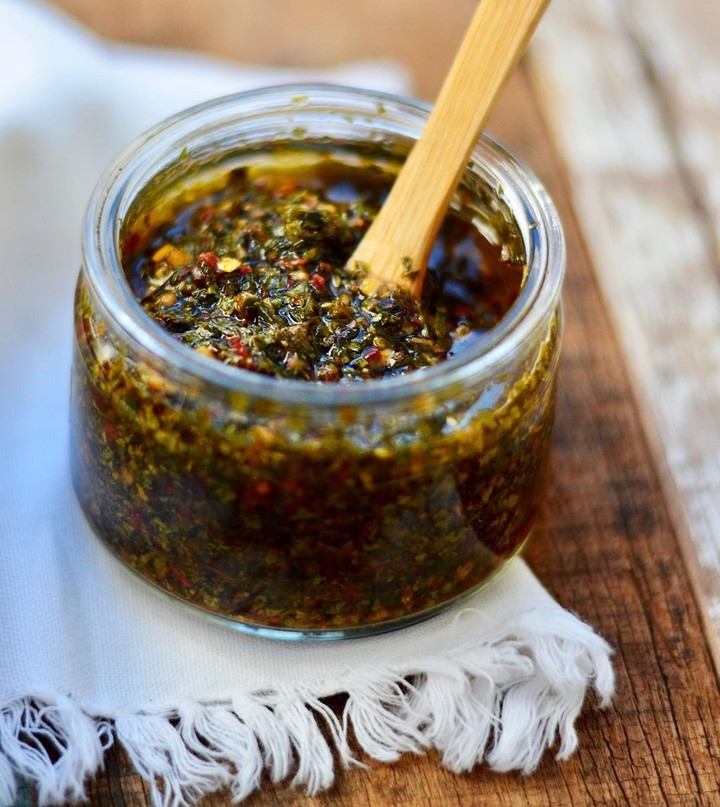

Chimichurri

Description
Chimichurri is a traditional Argentine sauce used as a condiment for grilled meats. It’s a vibrant, tangy, and herbaceous sauce that adds a burst of flavor to any dish.
Ingredients
- 1 cup fresh parsley, finely chopped
- 1/2 cup fresh cilantro, finely chopped (optional)
- 4 garlic cloves, minced
- 2 tablespoons fresh oregano, finely chopped or 1 teaspoon dried oregano
- 1/2 cup olive oil
- 2 tablespoons red wine vinegar
- 1 tablespoon lemon juice
- 1 teaspoon red pepper flakes (adjust to taste)
- Salt and black pepper to taste
Steps
- In a medium bowl, combine the chopped parsley, cilantro (if using), garlic, and oregano.
- Stir in the olive oil, red wine vinegar, and lemon juice.
- Add the red pepper flakes, salt, and black pepper to taste.
- Mix well until all the ingredients are thoroughly combined.
- Let the chimichurri sit for at least 30 minutes to allow the flavors to meld together.
- Serve as a condiment for grilled meats, vegetables, or use as a marinade.